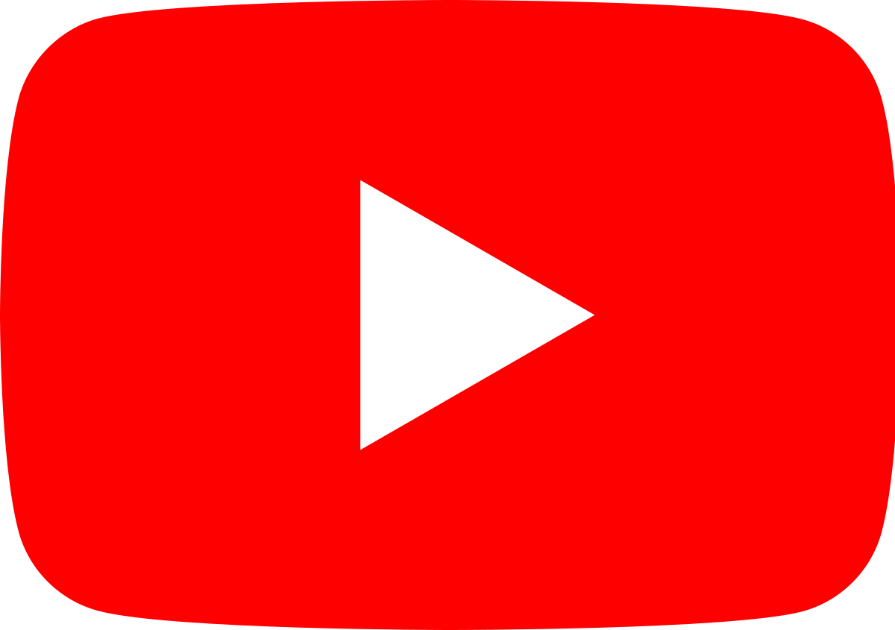

Что говорят нам о ютубе 2 первых абзаца из Википедии:
YouTube («ютьюб» или «ютюб», иногда (на американский манер) «ютуб») — видеохостинг, предоставляющий пользователям услуги хранения, доставки и показа видео. YouTube стал популярнейшим видеохостингом и вторым сайтом в мире по количеству посетителей.
Пользователи могут:
В январе 2012 года ежедневное количество просмотров видео на сайте достигло 4 млрд. На сайте представлены фильмы, музыкальные клипы, трейлеры, новости, образовательные передачи, а также любительские видеозаписи, включая видеоблоги, слайд-шоу, юмористические видеоролики и прочее. По данным «Российской газеты», в апреле 2013 года 2 % аудитории сервиса, или 51 миллион человек, составляли россияне. На сайте есть различные музыкальные чарты, показывающие предпочтения пользователей в зависимости от географического положения.
Что я о нём думаю: